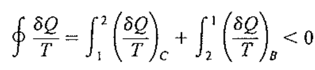
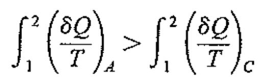
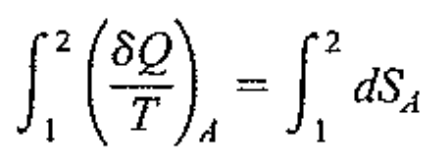
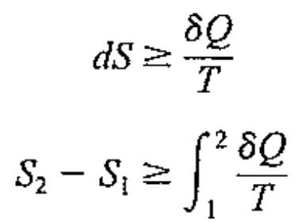
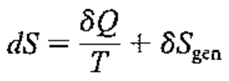
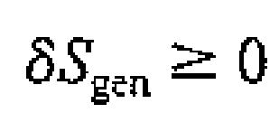
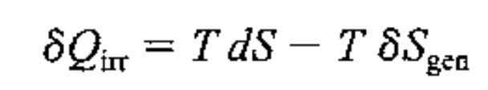
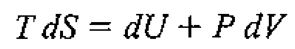
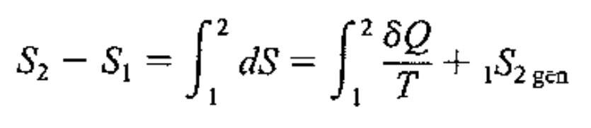
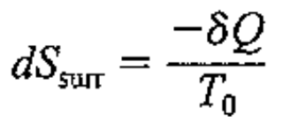

아마 공대생이시면, 엔트로피가 항상 증가한다 라는 말은
무조건 한번쯤은 들어보았을 것이다.
맞는 말이지만 앞뒤 다짜르고 한말이다 즉 감소하는 경우도 존재한다.
그렇다면, 정확히 어떤 상황에서 항상 증가하는 것일까?
이전전 포스터에서(ch6)
Clasisus Inequality에 대해 증명하였다.
![[Thermodynamics] ch 6. Entropy generation.](./images/img-001.png)
![[Thermodynamics] ch 6. Entropy generation.](./images/img-002.png)
따라서, 위 그림에서 A,B는 reversible이고, C는 irrversible이므로,
![[Thermodynamics] ch 6. Entropy generation.](./images/img-003.png)

두식에서, B항을 연립해주면,

여기서 ENtropy 정의에 1과 2사이의 Entropy 변화량을
Reversible process A 를 통해서 나타낼 수 있다.
![[Thermodynamics] ch 6. Entropy generation.](./images/img-006.png)
정말 중요한 것은,
S2-S1은 경로 A를 통해서든 C를 통해서든 그게
어떤 경로이든 상관없이 일정하다는 것이다
왜????
Entropy is state function, Thermodynamics Property
Pressure, Temperature, Internal E, Enthalpy처럼
경로와 무관하게 어떠한 State면 어떠한 값으로 딱 나오는
열역학적 property이다.(이전전포스터에서 설명)
결국, Irrversible C의 경우에는
![[Thermodynamics] ch 6. Entropy generation.](./images/img-007.png)
Reversible 인 A의 경우에는

따라서, 최종적으로 Reversible, Irreversible 인 경우 모두를 포함하여
다음과 같이 표현할 수 있다.

여기서, 투입된 열은 reversible일수도,
irrversible일수도 있고 상관이 없다.
이제, 위 식을
Generation term을 추가해서 표현하면,
다음과 같이 표현 할 수 있다.

(여기서 햇갈리지 말아야할 것은,
dQ/T -> Reversible process라는 것이다)
그리고 Sgen -> Irreversilbe process에서만,
나타나는 엔트로피 증가이다.

조금 어렵기 때문에 방금전의 예시중 Process C를 다시 살펴보자.
dSc 의 경우 dQ/T에 더해서, 엔트로피가 더욱더 증가하였기 때문에,
부등호가 존재함을 알 수 있다.
결국 Sgen > 0 이면, Irrversible process이고,
Sgen = 0 이면 Reversible process임을 알 수 있다.
따라서,
증명한, 위 식에 irrversible heat flow를 계산해주면,

즉, Irreversbile 의 경우에
실제 reversible에서 열전달보다 적은 양의 열이 전달됨을 알 수 있다.
뿐만아니라, 열역학 제 1법칙과 Property relationship 식을 이용해서
![[Thermodynamics] ch 6. Entropy generation.](./images/img-013.png)

Irreversible Work를 유도 할 수 있다.
![[Thermodynamics] ch 6. Entropy generation.](./images/img-015.png)
기존의 Reversible work의 경우 모두 dW = pdV 였지만,
Irrevesrible의 경우 그보다 작다.
위에서 쭉 다뤄왔던 내용들을 요약하고 마무리하자.
엔트로피가 항상 증가하는 말 이전에,
'Entropy는 생성된다'

위식이 함축하고 있는 의미는,
Reversible process의 경우 엔트로피는 생성되지 않았고(Sgen = 0)
dQ<0 인 경우, 엔트로피는 감소한다.
즉, 열이 밖으로 나가는 경우에는 엔트로피는 감소할 것이다.
반대로 엔트로피가 증가할 수 있는 경우는
열이 안으로 들어오는 경우(dQ>0)
+
S gen > 0 인 경우,
즉 Irreversible process 이다.
진짜 마지막으로, Entropy변화량의 boundary를 조금더 키워서 관찰해보자.
![[Thermodynamics] ch 6. Entropy generation.](./images/img-017.png)
Control mass
를 기준으로 그 주변 (surrounding) 에서 열을 받고,
일을 밖으로 하는 상황을 가정해보자.
위에서 배운 내용에 의하면,
![[Thermodynamics] ch 6. Entropy generation.](./images/img-018.png)
그리고 Surrounding의 entropy변화량은

그렇다면, Control mass + Surrounding인 총 Net의 entropy변화량은
![[Thermodynamics] ch 6. Entropy generation.](./images/img-020.png)
온도가 높은 곳에서 낮은 곳으로 열이 흐르므로,
T0>T
dSnet ≥ 0
결국 전체 universe net 관점에서 entropy는 항상 증가한다.
바로 서론에서 언급한 그 명제가 성립된다.
그렇다면 엔트로피는 어디서 왔을까?
정답은 우주 속에 있다.
밑 영상에서 보다 자세하게 설명해주고 있다. 정말 재밌습니다^^
https://youtu.be/DxL2HoqLbyA?si=MqBFpbAARXtjLLee
여기서 Control mass 2관점에서 한번 해석해보자.
c.m2는 그저, Surrounding과 control mass를 구분 짓는 벽이라고 생각하자.
그렇다면, Surrounding으로부터 들어온 모든 열은 Control mass로 흐르기 때문에,
dE = 0 , dS = 0이라는 것을 알 수 있다. 따라서,
엔트로피의 정의에 의해.
![[Thermodynamics] ch 6. Entropy generation.](./images/img-021.png)
여기서 Sgen2 는 Control mass 2에서 생성된 Entropy이다.
그리고 이전 포스터에서 Generation Entropy는 항상 양수이거나 0과 같다는 것을 배웠다.
![[Thermodynamics] ch 6. Entropy generation.](./images/img-022.png)
결국, dQ>0 인 경우 T0 > T,
dQ<0 d인 경우 T0 <T.
즉, 열은 높은 곳에서 낮은 곳으로 흐른다는 것